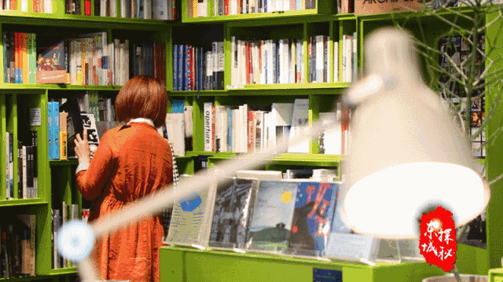

东城探秘 | 春日读书好去处
来源：北京东城
最美人间四月天
读书兴味长
莫负好时光
今天是第二十四个世界读书日，跟着东城探秘小达人一起来打卡咱东城读书的好去处吧！
“共和国第一店”：王府井书店
到王府井商圈购物休闲，如果你不去王府井书店一定会觉得遗憾。今年是新中国成立70周年，也是王府井书店建店70周年。70年来，王府井书店的不断变迁见证了首都公共阅读文化事业的大发展。
70年前，前身为新华书店北平第一门市部的王府井书店开启了“金街有书香，文化润京华”的历史征程。
1950年，书店由简陋的门市部迁入一栋四层楼房，以品种最多、贮量最丰富成为当时全国乃至亚洲规模最大的书店。70年老店在全民阅读的推广中一直引领着时代的步伐。
书店三层的新型少儿阅览区“怀中读阅童馆”开放，营业面积1300平方米，包括低幼、青少年、科普读物和儿童绘本等两万余种书籍。
在王府井书店的六层还有一个图书借阅“私人订制”的图书馆——东城区第一图书馆王府井书店分馆。它以实体书店丰富的新书资源和前沿出版信息，满足图书馆的馆藏需求，实施“读者参与文献建设”，实现了图书发行与读者借阅服务的无缝对接，由此开启了图书馆与实体书店合作的新模式。
70年风风雨雨，王府井书店见证的是新中国书店的变迁；70年心心念念，这里守护的是读者的精神家园。
店庆期间，王府井书店各楼层，还将设立“京腔儿·京味儿”“魅力中文”“绘不可挡——奇妙绘本旅行记”“阅读的光芒——中外文学精品图书”“爱生活，爱自己——生活类畅销图书”等各类新书、畅销书展销活动，为读者打造一场阅读盛会。
“最北京”图书馆：角楼图书馆
在老北京旧城的东南角有一个地标性的建筑——左安门角楼，现如今这里还藏着一个现代化的图书馆，数千册的北京历史文化书籍，说的是老北京的人，介绍的是老北京的事儿，要找咱北京城最有京味儿的图书馆来这儿准没错儿。
推开仿古城墙上敞开的透明玻璃门，特有的木香、书香和暖暖的气息扑面而来。一层为主题文化活动及展览展示区，充满老北京的文化韵味。二层为地方文献阅览区，现有地方文献图书近万册，纸质报纸30余种、期刊100余种，为读者提供阅读服务，同时举办小型读书会、文化沙龙等活动。三层是辅助文化活动区，可以登上角楼外平台，俯瞰护城河、眺望北京城，一览京城美景。
“阅读北京”、“聆听北京”、“艺术北京”、“品味北京”，这是角楼图书馆的四大主题，围绕“传承老北京文化”的主题，一天一场公益活动。
自2017年10月28日开馆以来，使用面积只有800多平方米的角楼图书馆，累计接待14万余人次，举办670多场活动，被读者赞为“最北京”的图书馆。
文艺书店
对于年轻朋友来说，文艺、小资、颜值高的个性化书店也极富吸引力。
言几又是一家极富想象力和创造力，展现自我和个性的创意生活体验一体店，它有书，有咖啡，有文创产品，有食品，有画，是融合了多元素的设计空间。
库布里克书店是个很酷的书店，它与美国知名导演斯坦利·库布里克同名。这家书店主要售卖文学、电影为主的图书、影碟、唱片。在绿色书架的空间里，充满了各种梦幻及想象，简约、文艺且清新。
经过几年持续追踪，他发现2005年至2009年，北京三环路内五个摊位及以上规模的菜市场有43个消失，新开业46个。消失的菜市场中有3个被成功升级为超市，23个因城市开发被拆除，其余转为其他城市功能。变化趋势是，批发型的大型菜市场逐渐从中心城区外移，中级别菜市场呈现出动态的稳定性，小菜市场则比较复杂。

据了解，东城区目前有区级图书馆2家，文体活动中心阅读空间17个，社区级别的阅读空间130个，采用线上与线下结合、立体与平面配合的方式，策划系列阅读活动，大力推广“书香东城”全民阅读平台，让阅读融入生活，也让生活因书香而更加美好。
